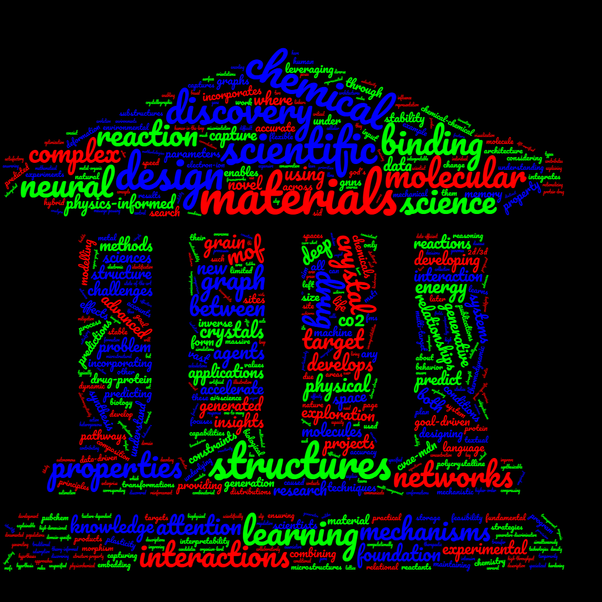

Accelerate discovery and bring scientific structure into AI systems across materials, molecules, experiments, and end-to-end scientific workflows.
AI for Science
Scientific copilots for automated discovery.
This program develops systems that can work scientifically: ground themselves in literature and data, generate hypotheses, write analysis code, design experiments, explore large spaces, and communicate findings with experts in the loop.

Scientific copilots, inverse design, reaction prediction, molecular design, and research workflows where validation and iteration cost dominate.
Open to collaborations with researchers in chemistry, materials, biology, computational science, and scientific infrastructure.
Program Areas
From scientific workflows to physical and life sciences.
Scientific copilots
Autonomous and human-guided systems for grounding, analysis code generation, experiment selection, evaluation, and explanation.
Physical sciences
AI for materials, alloys, molecules, and expensive design spaces where simulation, synthesis, and validation are costly.
Life sciences
Drug discovery, biological reasoning, and systems that support scientific work in complex biological domains.
- AI for scientific discovery: A new frontier, 2025
- AI4Science: The 5th paradigm, Los Alamos, 2025
- AI4Science, VNU Hanoi and TDTU, 2025
- Generative AI to accelerate discovery of materials, PRICM11, 2023